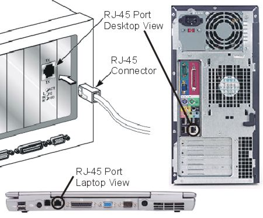
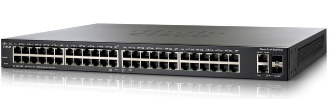
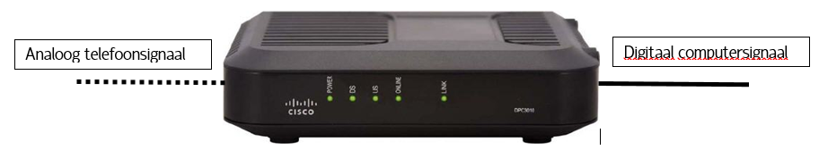

Computernetwerken - Hardware
Deze materialen zijn gemaakt voor 4 TSO Handel
De presentatie is te vinden in de kolom met links hiernaast.
Om een computer te verbinden met een andere zijn er verschillende hardwarecomponenten nodig. Net zoals bij verbale communicatie (tussen twee mensen) zijn er ook bij computers tussenstappen nodig. Hieronder vind je een beknopt overzicht van de componenten die we tijdens de les behandeld hebben.
Netwerkkaart
De netwerkkaart is als het ware de stem en het gehoor van een
computer. Via de netwerkkaart is de computer in staat om zich aan
te sluiten bij het netwerk en er ook deel van uit te maken. Op de
netwerkkaart vind je de netwerkpoort, typisch kan hier een
netwerkdraad op aangesloten worden. Een bekende stekker is de
RJ-45, die een UTP-kabel aan de netwerkkaart hangt. Hieronder
is een voorbeeld van zo een RJ-45 aansluiting te zien.

Switch
Een switch kan je vergelijken met een verdeeldoos. Wanneer er een
bericht op een poort (aansluiting) arriveert, zal de switch die
doorsturen naar de poort waarop de bestemming is aangesloten.
Switches zijn zelflerend, na verloop van tijd weet hij perfect
welke bestemming op welke poort in aangesloten.

Router
De router is de meest slimme hardwarecomponent van een netwerk. Het is tevens ook de ruggengraat. Je kan een router vergelijken met een grote verkeerswisselaar. Als je van punt A naar B moet, dan zal je op de verkeerswisselaar keuzes moeten maken. Een router doet dit allemaal voor jou. Wanneer er een bericht aankomt, dan zal het – o.b.v. de verworven kennis – bepalen wat de volgende router is en doorsturen naar die router. Wanneer het bericht is gearriveerd op de laatste router voor de eindbestemming, geeft hij het bericht door aan de switch. Een router is in staat om verschillende netwerken te verbinden. Een mooi voorbeeld hiervan is de router die bij je thuis staat. Deze verbindt immers jouw thuisnetwerk met het internet.
Modem
De modem is een erg belangrijke component om een netwerk aan te
sluiten op een distributienetwerk (netwerk waarlangs het
telefoon-, TV- en internetverkeer wordt getransporteerd). Het
zorgt er immers voor dat de computersignalen kunnen worden
verstuurd over een telefoonnetwerk (bv. bij Proximus) of
kabelnetwerk (bv. bij Telenet). Daarnaast is een modem ook instaat
om het internetsignaal tussen alle ander signalen uit te filteren.

Thuissituatie
Het is mogelijk dat je bij je thuis slechts een of twee toestellen vindt. Dit komt omdat de telecomoperatoren (Proximus en Telenet) de verschillende onderdelen combineren in een enkel toestel. Bij grote netwerken (schoolnetwerk, bedrijfsnetwerk, internet,…) vind je de onderdelen wel nog apart terug omdat de belasting van dat netwerk veel groter is.